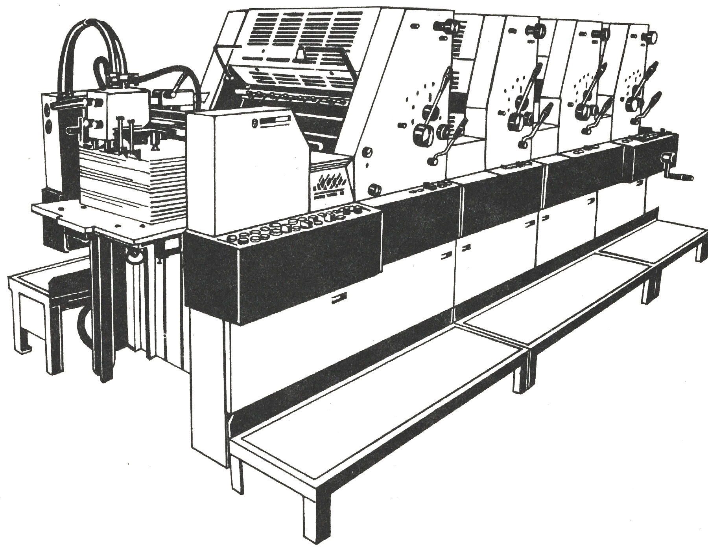

После получения бумажные ролики транспортируюся на склад, где и хранятся на деревянных поддонах.
Для работы с бумагой в роликах используется размоточная листорезальная машина ЛР, которая осуществляет размотку бумажного полотна
одновременно с двух роликов шириной от 600 до 920 миллиметров. При размотке роликов имеется возможность изменять длину листов
от 60 до 120 сантиметров. После размотки стопы листов подрезаются под необходимый печатный формат и перемещаются в печатный цех
либо на склад для акклиматизации.
Допечатная подготовка охватывает работу, проводимую непосредственно
перед печатью. В процессе допечатной подготовки используется готовый макет заказчика либо проводится набор и верстка
макета по содержимому,предоставляемому заказчиком.
Макет состоит из страниц, скомпанованных таким образом, чтобы после печати с двух сторон
печатный лист можно было сложить (сфальцевать) определенным образом и получить при этом запланированный порядок отпечатаннных
страниц. Операция размещения печатных страниц на листе называется спуском полос и зависит от послепечатной обработки готовой
продукции. По готовности макета проводится операция цветоделения.
Цветоделение означает разделение цветного изображения макета на несколько монохромных полутоновых составляющих,
каждая из которых содержит информацию только об одном цвете. Цветное изображение делится минимум на четыре монохромных
полутоновых изображения из которых производится по четыре печатные формы для каждого печатного листа.
Печатная форма представляют собой алюминиевую пластину на которую путем экспонирования лазером наносится невидимое изображение.
Изображение проявляется с помощью химического травления специальными реагентами. Для изготовления печатных форм мы используем систему CtP,
которая позволяет переносить изображение с файла макета непосредственно на печатную форму.
Процесс переноса краски на бумагу называется печатью. Наша типография использует
разновидность плоского способа печати - офсетную печать. При плоской печати печатные и пробельные элементы
располагаются в одной плоскости, но соответствуют различным материалам (например алюминий и полимерное покрытие)
В процессе печати пробельные участки увлажняются для того, чтобы отталкивать краску, затем на печатную форму накатывается
краска, которая "налипает" только на печатающие элементы. Офсетная печать является непрямым способом печати и
отличается наличием "офсетного" цилиндра с резинотканевым полотном (декелем), который является промежуточным носителем
печатной краски.
На этапе печати подготавливаются печатные краски, на формные цилиндры печатной машины устанавливаются готовые печатные формы,
а на офсетные цилиндры - подготовленные резинотканевые полотна. В кипсейки красочных ящиков закладывается краска,
в машину устанавливается бумага.
Непосредственно при печати происходит перенос изображения, сформированного предварительно раскатанной краской,
под давлением с печатной формы на печатный лист через офсетный цилиндр.

Послепечатная обработка продукции охватывает стадии, которые проводятся после
запечатывания бумаги. В нашей типографии осуществляются такие операции как резка, фальцовка, подборка листов и тетрадей,
переплетные работы.
Фальцовка. В процессе фальцовки печатный лист складывается в один либо несколько сгибов в соответствии со схемой
спуска полос. После фальцовки и подборки нескольких печатных листов формируется тетрадь, состоящая из последовательно идущих
страниц издания. При клеевом бесшвейном скреплении отдельные сфальцованные листы размещаются один за другим, вследствие чего
1-й лист содержит страницы 1–8, а 2-й лист – страницы 9–16. При шитье внакидку сфальцованные листы вкладываются один в
другой, при этом 1-й лист содержит внешние 8 страниц (1–4 и 13–16), а 2-й лист – внутренние 8 страниц (5–12).
Подборка или комплектовка. Если 32-страничная брошюра напечатана по 8 страниц на листе, то она будет состоять
из 4 тетрадей. При тираже 1000 экземпляров после фальцовки получается 4 стопы по 1000 сфальцованных листов. Они должны быть
разъединены и размещены в соответствии с заданием. Размещение друг за другом (для клеевого скрепления) называется подборкой и
выполняется на специальных подборочных машинах. Вкладывание тетрадей одна в другую (для шитья внакидку) осуществляется последовательно.
Оно большей частью выполняется на вкладочно-швей-но-резальных агрегатах (ВШРА), которые также выполняют рабочие операции по шитью
и обрезке.
Клеевое скрепление и шитье проволокой. Корешок подобранных тетрадей для клеевого скрепления брошюры сначала фрезеруется,
чтобы облегчить проникновение клея. Затем корешок полностью обрабатывается клеем, большей частью расплавленным, накладывается обложка
и приклеивается к корешку. После машины клеевого скрепления продукция отправляется на трехстороннюю резальную машину.